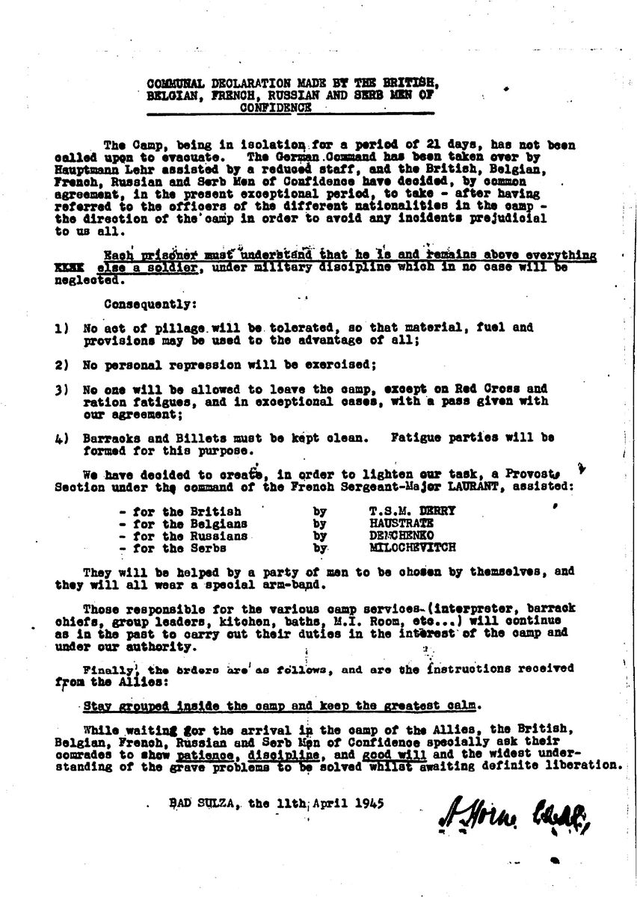
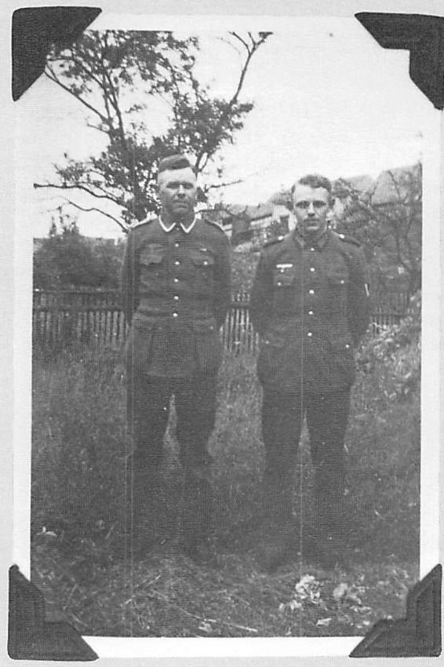
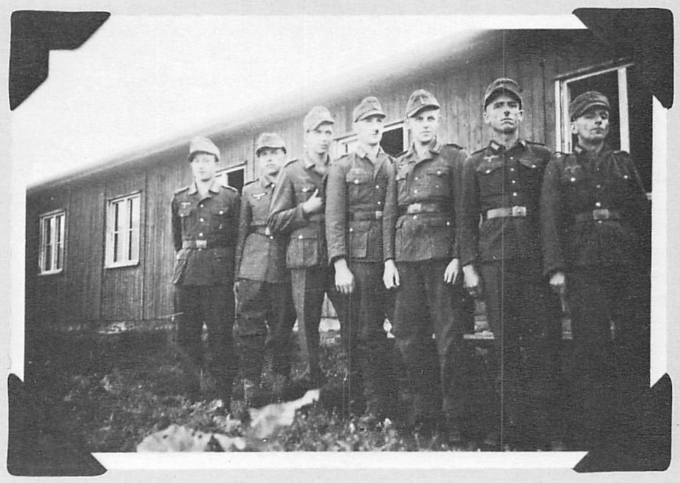
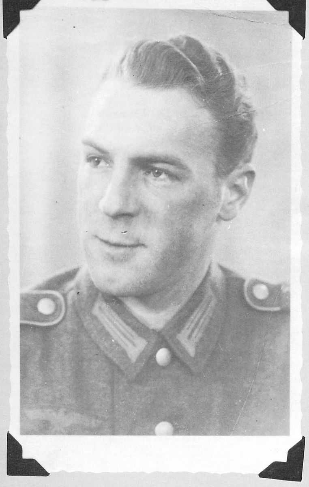
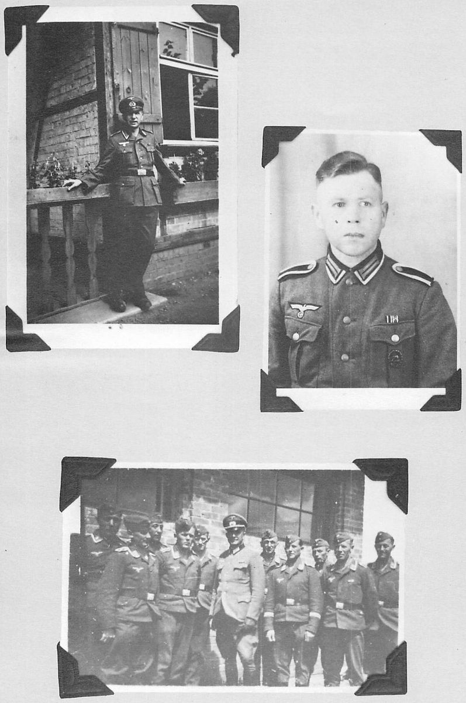
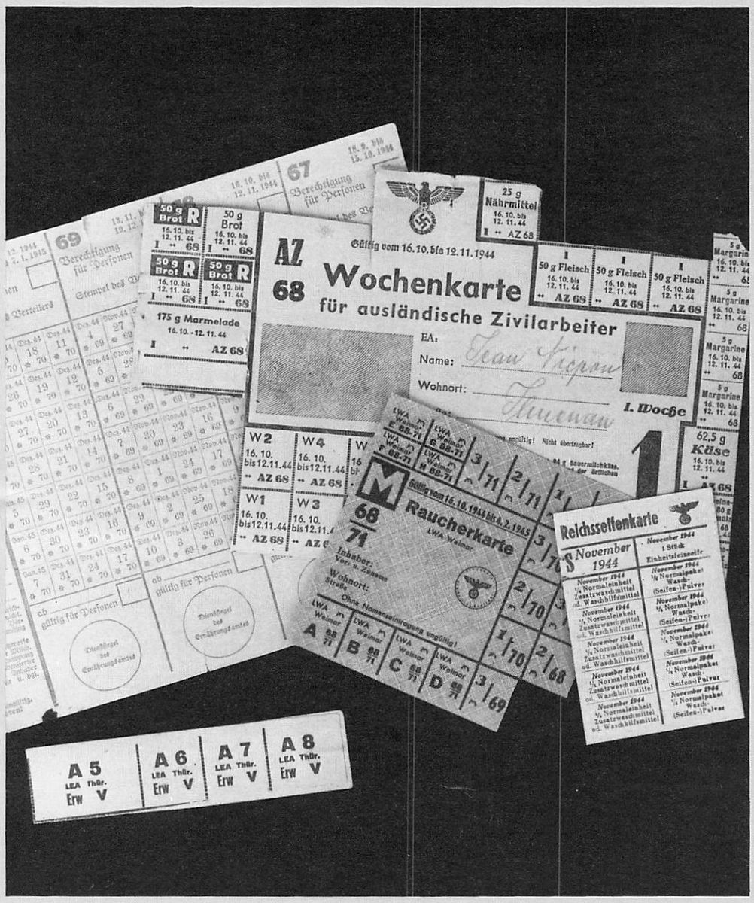
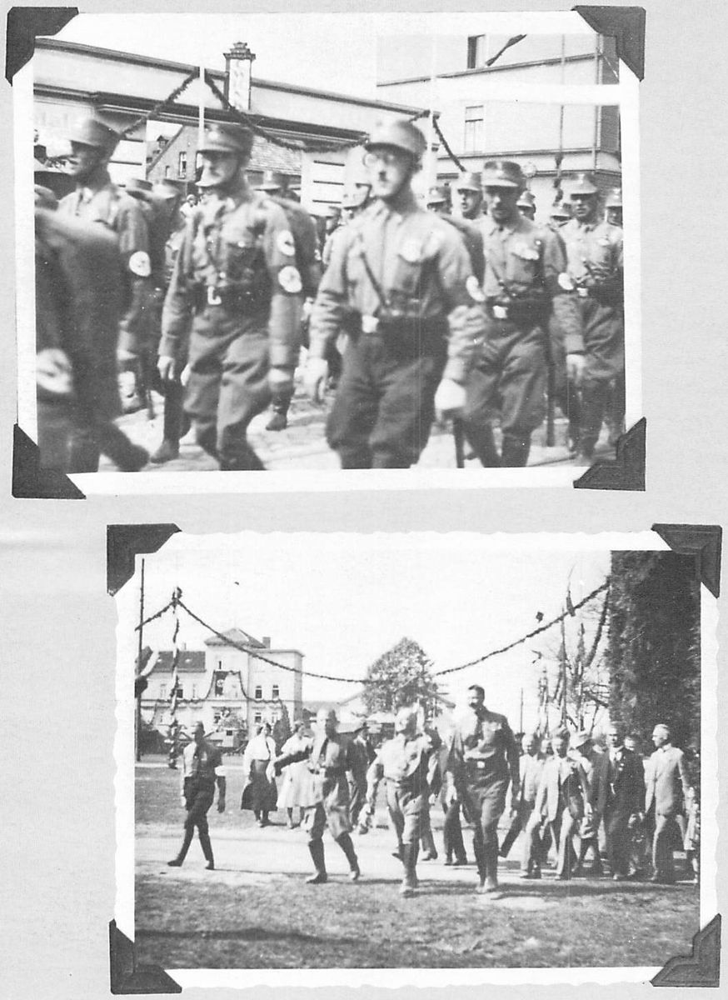
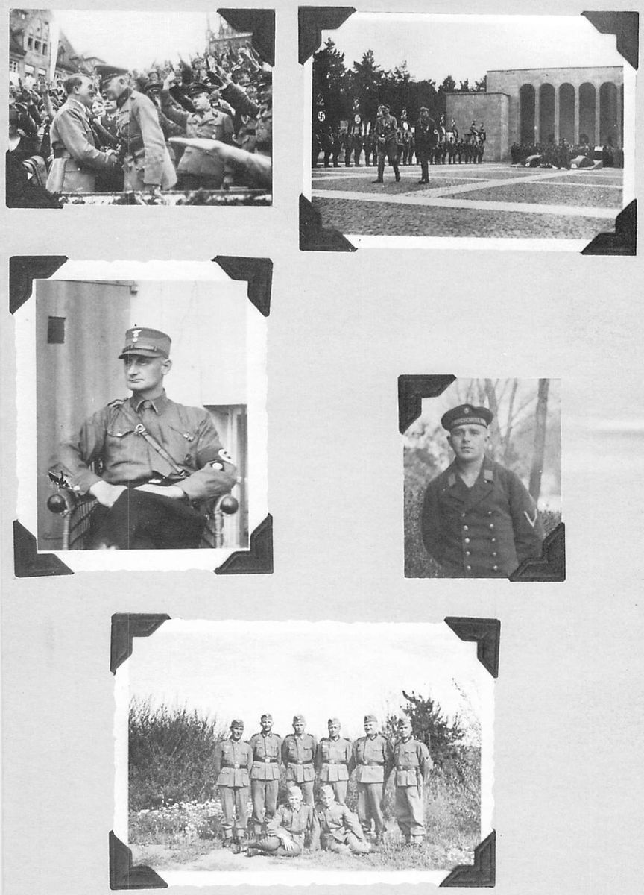
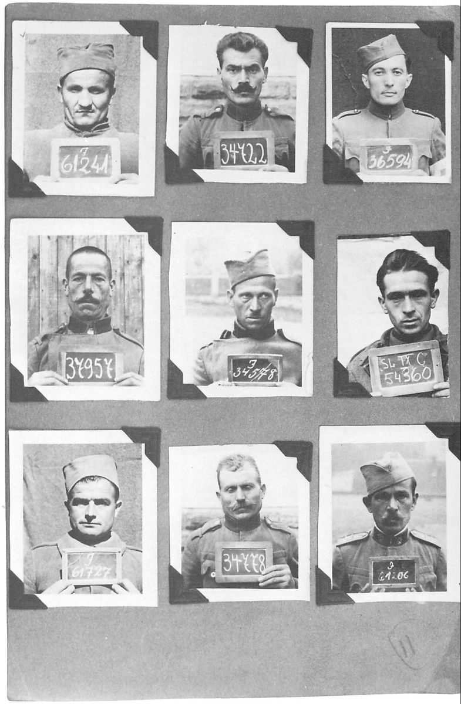
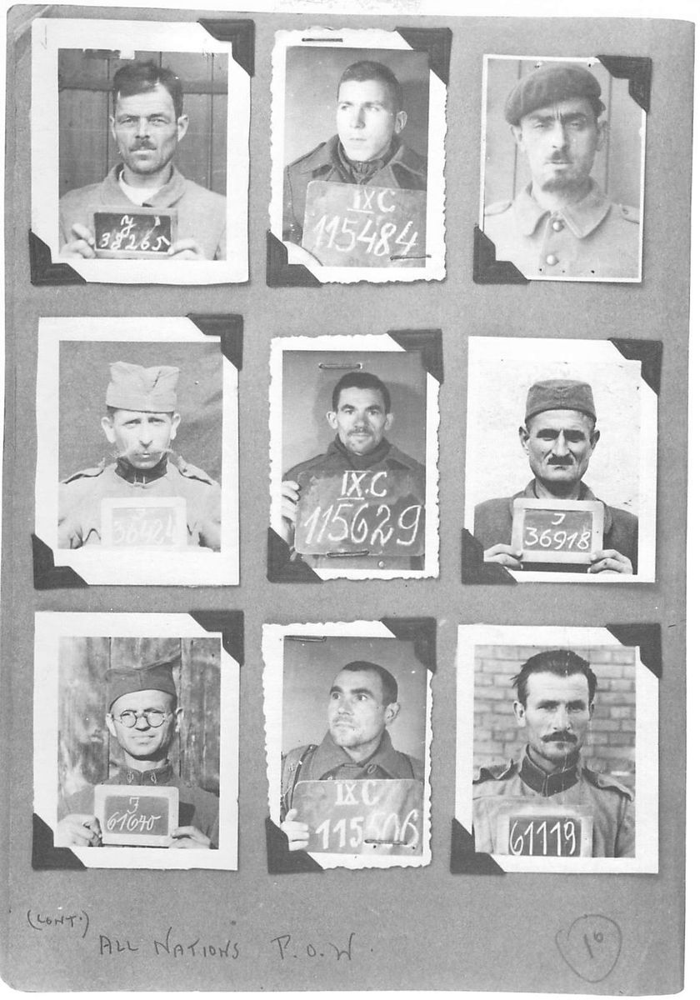

Chapter 9Forced March to Liberation
On the first day we marched twenty-one kilometres, joining thousands of other prisoners clogging the roads, and eventually arrived on the outskirts of Ebeleben. We were herded into barns and sank gratefully into the sweet-smelling hay for a night’s rest.
We awoke cold and stiff from the unaccustomed marching and again took to the roads. We were constantly on the alert for diving planes that were machine-gunning all moving vehicles, freight trains and railway depots. In the early evening, we arrived at Hottenhausen, after foot slogging for another twenty-six kilometres. By this time we realized what poor condition we were in. We nursed our blistered feet and tried to forget the soreness in our shoulders caused by the heavy packs. We were glad to bed down that night, again in barns and outbuildings.
On April 4, we had only marched a few kilometres when some men began dumping their belongings to lighten the load. I dumped everything I considered unnecessary, keeping only a blanket, mess tin and the little food I had left. I couldn’t bring myself to discard my notes and diary, so I stuffed these inside my tunic, along with a dog-eared copy of The Robe. I had waited almost a year to get this book and was damned if I was going to toss it away without finishing it. I managed to read it while marching and found it took my mind off the aches and pains.
We travelled twenty-seven kilometres that day to another small town called Grossneuhausen and once again holed up in a barn. Despite my fatigue, I had difficulty sleeping. There was a constant dull ache in my stomach, my shoulders and feet were sore and my knees had started to act up. What a hell of a condition to be in at a time like this!
As I lay there, listening to the snores of men and the squealing of mice, my thoughts returned to England. I wondered who was riding my motorbike. It seemed crazy to dwell on such a subject, but anyone who’s ridden a bike for two years, eaten on it and slept on it, will understand how a person can miss it. I forgot all about being wet and cold and the aggravation of motorcycle breakdowns. I’d even have forgotten my three major spills if it hadn’t been for the ache in my knees caused by torn cartilages following one of the upsets. The dull ache in my gut was also a reminder, as it had first occurred after the initial year of bike riding. But I turned my mind back to the good times and fell soundly asleep to the roar of the motorcycle and the sound of the wind as I sped off into nowhere.
On April 5 (the same day, we later learned, that Mühlhausen was liberated by the Americans), we marched to the outskirts of Sömmerda. The column was halted as the town was under air attack. We watched as factories were demolished by the falling bombs and had a front-line seat for the ensuing air battle between the fighter planes of the opposing sides. The Germans were outclassed. Soon their fighters were falling in flames or breaking off the fight and disappearing in the clouds.
The Allied planes were in control and, as we resumed the march, they dived low over the column trying to identify friend or foe. Unfortunately for us, German troops had infiltrated our column to escape the devastating machine-gun attacks. The Allied planes must have become aware of this as one squadron after the other peeled off and headed for the column with machine guns roaring. There was a mad scramble as both prisoners and Germans hit the ditches or raced for the fields to escape the rain of destruction. One senior NCO, remembering the instructions that had filtered through to us from Intelligence, quickly laid two long strips of white cloth side by side, a signal meaning ‘POWs in danger’. The attack was broken off and an audible sigh of relief was heard. The column marched off, leaving some men, both prisoners and Germans, beyond caring for.
As we passed through Sömmerda, we could see the Volkssturm (People’s Army) digging at the rubble of bombed buildings and erecting barricades against the advancing Allies.
With the diving planes and constant halts, we only marched eighteen kilometres to Herrengosserstedt that day. En route, the air activity was still deadly. We were constantly hitting the dirt. We saw a direct hit on a moving train and watched the planes devastate another railway depot. It was like watching a first-class war movie.
There were literally thousands of people on the roads, a mixture of British, French, Polish and Russian prisoners, plus German troops and fleeing civilians. It was a mad beehive of activity, and I felt certain that our guards had orders to march us in circles to avoid having us freed by the advancing British, Canadians and Americans on one side and the Russian army on the other. The whole scene reminded me of an ant hill that had been disturbed, with each ant dashing madly in circles, trying to get back to its home and security.
We encamped in farm fields that night and, before we could get bedded down, hundreds of Polish women prisoners were marched into the next field, separated from us only by barbed wire and the large man-like Nazi women guards armed with huge wooden batons which they wielded freely. There was a mad dash for the fence as both sides tried to communicate. They were in pitiful condition, with their clothes in rags and their feet clad in burlap sacks. They clamoured for food, cigarettes and soap and kept repeating the word ‘jig-a-jig’, which we had come to recognize as an international meaning for sex. We tried to throw things to them, a little of what we had left, but the huge women guards beat them back unmercifully and our guards moved in on us.
On April 6, the guards decided to keep us in the same location for another day and night as some of the prisoners were in very poor condition and unfit for marching. I lay awake until about 2:00 a.m., too hungry to sleep, and finally decided to take a chance and go in search of food. I had noticed a small cluster of houses about half a mile from the field; when we had marched past the day before a group of women had waved to the column in a friendly manner.
The time seemed endless as I worked my way through the fields flat on my stomach. I finally reached the perimeter marked only by four strands of barbed wire. The guards on duty were strung out along the wire but there were long gaps between them. I was in a cold sweat as I eased my way under the bottom strand and for a moment felt fear and almost gave up. My growling stomach dictated otherwise, and with one last roll I was under the wire and into the roadside ditch.
Fortunately the ditch was deep and almost water-free. I was able to crawl on all fours until I was well clear of the camp. It didn’t take me too long to reach the cluster of houses I had seen, but it did take me endless minutes to make up my mind which house to approach. I almost chickened out, picturing the occupants screaming for help and guards rushing from every direction to shoot me down. It was a stupid and thoughtless plan, but with my nature I knew I had to go through with it.
I circled the house I had chosen and tapped gently on the back door. Nothing happened and I repeated the tapping, almost wishing no one would hear and I could get the hell out of there. I was about ready to give up when I saw the light from a candle. The door opened slightly and a woman’s voice asked me in German what I wanted. I told her that I was a prisoner-of-war and wanted food in exchange for some soap, cigarettes and a tin of cocoa. She told me that she was a Polish field worker and that these houses were occupied by a group of Polish women prisoners who worked the farm for the Germans. She asked me to wait a minute and seemed very nervous. She finally came back to the door and handed me a loaf of bread and a small cabbage. I gave her a bar of soap, half a deck of cigarettes and almost a full tin of cocoa. She wished me luck and I took off, cramming the bread and cabbage up the back of my tunic and tightening my belt.
I made my way back to the ditch, crawled the length of it until I was back to the camp and gingerly raised my head to see how the land lay. I almost let out a yell as I saw one of the guards patrolling the fence in front of me. I quickly ducked down and almost exploded trying to hold my breath. When I got up enough courage to take another look, he was about fifty or sixty yards away. I looked in the other direction. Another guard was still further down the fence. I quickly scrambled under the wire and squirmed back to my blanket and safety.
I had to awaken a couple of the boys to brag about the night’s adventure and share the grub. They weren’t interested in how or where I had obtained the food, but only in getting something to fill the void in their stomachs. It wasn’t a gourmet meal, but when you’re hungry any food is like manna from heaven. We finally fell asleep with a satisfied sigh.
When I was out of the camp, I had thought of how easy it would be to escape. I had no idea of where the Allied lines were, however, and, with the large numbers of hostile troops and civilians around, I felt it was foolhardy at this stage of the game to take any unnecessary chances. From all the signs around us, including the frantic actions of the Germans, it wouldn’t be too much longer before we were freed. The main thing now was to stay alive until that moment arrived.
On April 7, the guards decided to move us and we were on the march again. Before the day was over, men started to throw up, complaining of violent gut aches and diarrhoea. We had been drinking ditch water and eating anything we could get our hands on. This, no doubt, was the cause of the problem.
I was all right until early evening and then it hit me like a sledge hammer. It felt as if a giant fist had pounded into my stomach. I started to vomit and couldn’t control my bowels. I kept having to drop out of the column with others as the guards yelled and prodded us with the butts of their rifles. All I wanted to do was lay down and die and to hell with the guards, but they thought otherwise. It was an unending cycle: run to the side of the road, throw up, go, be prodded back to the column and repeat the action over and over again. The only thing I was thankful for was my copy of The Robe, which provided the only toilet paper I had. It was a great book in more ways than one!
When the march was finally halted the men fell into the hay in utter exhaustion. There wasn’t much sleep that night, as we kept stumbling out of the barn retching and heaving, only to return to the terrible stench of men too weak to move who were lying in their own filth. I kept wondering how low we must sink before this rotten ordeal would be over.
In the morning, I staggered out of the barn, glad to get into the fresh air and away from the horrible scene within. I looked around for some place to go. There was no privacy and nothing but a large pile of cow and horse manure in the centre of the courtyard. This was surrounded by squatting men with the spaces shared by pecking hens, pigeons and ducks. We gave and they received. I awaited my turn around the pile, desperately trying to hold on. I finally got a place and, as I glanced upwards, I noticed two German peasant women leaning out of the windows, gossiping and completely ignoring the misery that was enacted beneath them.
The guards routed us out and we marched another eighteen kilometres to Schmiedehausen. On the way, many men gave up, too sick and weak to march any further. The guards finally gave up trying to prod them to their feet and left them where they lay, either to die or make it later on their own.
Planes were bombing and strafing all day, but we were too sick to care what anyone was doing. All the men just wanted to lie down and be left alone. We knew the end must be near, as all we had been doing was walking in circles. The Germans knew they had been beaten but seemed afraid to surrender. There were pockets of resistance where the Nazi party kept villagers fighting on, hoping against hope for a miracle that would turn the tide of battle. What a hope! I simply couldn’t understand why they didn’t just leave, let the people surrender and get us the hell out of there.
We continued to march with difficulty, constantly falling behind the column to relieve ourselves. With this form of dysentery, we would no sooner get back to the column than we would have to fall out again. Rear guards kept prodding us but we were so sick and weak that we simply ignored their shouts and threats.
Towards evening, the worst cases, myself among them, were cut out of the column and marched a painfully slow five kilometres to Bad Sulza, the main camp of Stalag IXC. The camp doctor and the medics worked overtime to help deal with the new arrivals, and with their limited medical supplies they somehow worked wonders.
I’ll always be grateful to the Scottish medic who stood me up, held a fist in my stomach and with his free hand held the back of my neck and forced my head between my knees. He repeated this action three times, and when he straightened me up he told me to shove my finger down my throat. Whatever his method, it sure worked. I threw up violently and couldn’t seem to stop until I felt completely empty. This same man then gave me two large spoonfuls of dry cocoa and a small square of cheese. He laid me down and covered me with a blanket and I immediately fell into an exhausted sleep.
When I finally awoke, I felt like a new man. The runs had stopped and the only signs of my illness were a feeling of weakness and a very sore rear end. This was nothing compared to some men who had piles the size of chicken eggs.
In the afternoon, I was able to get into the courtyard and take stock of my new surroundings. It was a much larger camp than Molsdorf or Mühlhausen and contained prisoners of many nationalities. The different groups were separated only by barbed wire fences. The large group ‘next door’ were Russians in their dark green uniforms. These prisoners looked haggard and hungry and held a look of desperation in their eyes. Whenever I sighted these men, I always felt sorry for them. Their plight seemed much more desperate than ours. I had landed at Dieppe weighing between 175 and 180 pounds. During my term as a prisoner, I had dropped to 160 pounds. After the long march and the dysentery, I was 130 pounds soaking wet and still felt fat beside the Russian prisoners.
That night there was a continuous drone in the sky as planes bombed Jena and Apolda. At times it was almost as bright as day, with the many flares hanging in the sky and the searchlights stabbing and probing the upper darkness. The constant sound of ack-ack fire was only interrupted by the heavy crash of bombs that shook the buildings and had the ground continuously trembling as if in fear.
More of our friends arrived in the camp, cut out of the march which was now apparently headed for Hof in Saxony. We were supposed to be moved to the hospital in Stadtroda in groups of twenty-four, but at the last minute the move was cancelled since we would have had to pass through Jena which was still under air attack.
On April 10, not only the bombing continued but planes began diving and machine-gunning too close to our camp for comfort. Two freight trains on tracks alongside our camp were strafed with machine-gun fire and the empty shell casings fell into our enclosure. We were all flat on our faces praying for survival when suddenly I remembered what had been done with two white strips of cloth on the march. I worked my way to one of the buildings, entered what appeared to be a deserted officers’ room and grabbed a white sheet from the bed. Climbing to the roof of the building, I had just started to tear the sheet in half when I heard the familiar roar of approaching fighters. Glancing upwards, I could see the approaching squadron and, before I could put my intention into action, one of the planes peeled off and started his dive. I waved the sheet frantically as the plane came in at roof level. I swear he was so low that I expected to be cut down with a burst from his gun or at least hit and swept off the building. Instead, he dipped his wing at the last minute, zoomed upwards, and rejoined the squadron.
My trembling knees buckled and I sat down hard on the roof unable to move for several minutes. Before I climbed down, I watched as plane after plane dived on adjacent buildings with machine-guns chattering in a staccato melody of death and destruction.
German fighters appeared and the inevitable dogfights commenced. Planes dropped with black smoke trailing and parachutists billowed through the sky as the flyers tried to escape. Where Allied flyers were floating down, their comrades circled them to prevent them from being cut down by German fighters still in the area.
In the early hours of dawn, one of the guards told us that the front was only eight kilometres away. We could easily believe this, not only from the air action but from the sound of heavy shell fire gradually getting closer and closer. It was a scary feeling, being in the middle of the battle, but at the same time it was exciting and exhilarating to think of impending freedom.
There was a sudden commotion in the Russian enclosure next to ours. As we watched helplessly, the Jerry guards rushed in with fixed bayonets and started to prod the prisoners toward the gates in an obvious attempt to evacuate the camp and keep them out of the hands of the approaching Allies. There was a lot of screaming and shouting as the Russians tried to hang back and elude the prodding guards. Finally, shooting broke out and the camp was quickly emptied except for the dead and wounded laying in the courtyard.
Our turn came next. A large group of Germans entered our enclosure. They commenced the same procedure of prodding and shouting at us to move out. Not a man moved. The whole camp was determined that this was it: freedom was too near. The officer in charge of the guards screamed that either we moved out or we would be shot. The prisoners held their ground and glared in defiance. For a moment there was an ominous silence, suddenly broken by the unmistakable sound of approaching tanks. We knew this was our salvation and let out a thunderous cheer. The Jerrys took to their heels, rushing out of the main gate and disappearing in full flight.
At 5:05 p.m. on April 11, the tanks of the American Third Army arrived at the gates of the camp. We rushed out to greet them and they showered us with cigarettes and field rations. One trooper even stripped off his battle jacket and handed it to me, no doubt feeling sorry for my ragged appearance. The officer in charge laid out a map, asking directions and locations of other POW camps. We pointed these out and also gave them the general map location of our still marching comrades. Before they left, we told them the direction that the fleeing guards had taken and asked them to give them hell.

The tanks of Patton’s Army moved out with motors roaring and tracks grinding to continue their pursuit of the fleeing Germans. In short order we heard the sound of battle; they evidently met some resistance nearby. It didn’t last long and the battle sounds faded into the distance.
We began rounding up Jerry prisoners in the immediate vicinity. For years I had dreamed of this moment of revenge but when I came face to face with the first Jerry to surrender to me, all I could feel was compassion as I saw the fear in his eyes and noticed his trembling lips and hands. I escorted him to our camp, where we had set up a temporary prisoner compound, and even handed him a cigarette and let him show me snaps of his wife and children. Why, oh, why couldn’t my first prisoner have been ‘Plank-face’?




After the round-up, we received instructions from the military authorities to stay close to our camp for our own safety. This was sensible but, after almost three years of confinement and being as hungry as a bear I knew what I’d be doing first thing in the morning.
On April 12, I volunteered to do the scrounging for our combine and left the camp at first light for the town. I was constantly challenged by Belgian and French ex-prisoners wearing arm bands. They had been chosen to police the area in an effort to maintain law and order until the situation had stabilized. I identified myself and explained my mission and they allowed me to proceed after warning me to be careful of bands of Russians, Poles and Serbs who had armed themselves and were on the prowl, looting, drinking and firing their guns wildly at anything that moved.
I reached the town, which was bedecked with white flags flying from almost every building and window. I could hear sporadic firing as small pockets of resistance were cleared out and the shouts of roaming bands of ex-prisoners as they went wild in their newly obtained freedom.
I found a large house all boarded up, tore the boards from one of the windows and climbed through in the search for food. The large dining-room table was set with a hastily prepared meal which was only partly consumed. There were German uniforms on the beds and on the floors as if the occupants had shed their connection with the German army, eaten in haste and departed.

I ate my fill of German sausage and bread and then rummaged through the dresser drawers. I found snap shots of the former occupants; one of them was a high-ranking officer posing with Hitler. I took these and other pictures with Hitler in them as personal souvenirs and then went back to the dining room to load up with food for my buddies. When I had taken all the food available, I noticed a large jar of blueberry preserves on top of a sideboard. I put it to my lips and drank the sweet and heavenly juice, munching on the berries. I was in second heaven.


Suddenly, I heard a noise disturb the silence of the semi-darkened house. I yelled, ‘Who’s there?’ This was answered by the sound of a shot, magnified in the close quarters. I heard the whistle of a bullet and instinctively tensed as it rushed past my head. As a second shot rang out, I felt a thump in my stomach and could feel blood running down my front and legs. I staggered towards the window and tumbled to the ground. Slowly, I got to my feet, wondering at the lack of pain. In the early morning light I undid my trousers to look at the damage. The ‘blood’ was purple and turned out to be blueberry juice covering my front from the waist down. I chuckled in relief and then went helpless with laughter as I realized what had happened.
When the first shot rang out, I had lowered the jar from my lips. On the second shot, I had slammed the jar against my middle in a reflex action. Feeling the impact and the jar’s contents spilling down my front, illusion was complete. Such is the power of imagination!
I got the hell out of there fast, not trying to figure out who had fired the shots and caring less. I felt lucky to be alive, even if I did have a purple penis.
I dropped the grub off at the camp and went looking for meat and vegetables. I had no trouble finding onions and potatoes, but couldn’t turn up fresh meat until I came across the town depot. To the side of this building, there was a long row of wire cages, each holding a large Belgian hare, the largest I have ever seen. I picked up a piece of iron pipe, opened one of the cages, and tried to kill the animal. I met resistance, first from the hare, which was stronger than I thought, and then from the station master who came running from the station waving a shotgun, determined to protect his property. It was a stand-off until an American jeep came on the scene. When I told them my reason for wanting the hare, they fired a burst of machine-gun fire at the old fellow’s feet. He dropped his gun and ran. They then turned the gun on the hares, killing three of them. I thanked the Yanks and made off with my prizes, returning to the camp in triumph. What a meal we had that night. The hare was cooked with onions and potatoes and carrots in a huge stew, our first ‘real’ meal in close to three years.
The next day I left the camp again, on the prowl for anything I could find. I ran into a French ex-prisoner who told me where large quantities of wine and champagne were stored. He led me to a huge concrete building with the Nazi emblem emblazoned across the front. It turned out to be where they stored wines looted from occupied countries such as France. Entering the building, we came across a wild celebration. Prisoners of all nations were breaking open cases, sampling the contents, then throwing the bottles aside until they found something more to their liking. I picked a case of champagne and lugged it back to the camp. On my way I ran into the two soldiers who had helped me get the hares the previous day. I repaid them by giving them directions for the fine wines.
On a second trip, with others from the camp to help carry more cases, we were out of luck. Someone had put a torch to the building and it was now engulfed in flames. Disappointed, we started to make our way back to the camp. En route, two or three stray German fighters dived on the now occupied town, spraying everything moving with machine-gun fire. We dashed for shelter behind an American tank as it opened up against the diving planes. Other guns quickly joined the action and one of the planes was soon hurtling earthward in flames as the others disappeared into the cloud cover.
Later that afternoon, I located the main records for Stalag IXC and, after much searching, found my personal records as a POW. (I already had my official photo which I had obtained from the hospital records when first captured.) I searched through the various huts. One contained nothing but POW photos, another was full of confiscated cameras, yet another had watches and lighters, etc. All buildings had been entered before. The last hut, which contained currency, was knee-deep in bills dumped from the various drawers. I took one bill from each country that I could find, then noticed stacks of new bills in their original wrappers piled in one corner of the room. They turned out to be ‘Italian Occupation’ currency used by the invading Allies. I took only one thin sheaf as a souvenir. (Later, on my return to England, I found that I was able to trade it for British currency through a Canadian officer who had been in the occupation forces in Italy. I kicked myself that I hadn’t taken a kit bag full.)


My last sortie was in the late afternoon, when I entered the local town hall. This was full of prisoners looking for German Lugers. The hall was piled high with cast-off German uniforms, as if a whole company had changed here into civvies before fleeing. I kicked something hard as I sorted through the clothing and a Luger slithered across the floor. Other hands quickly snatched it up and I was denied the main souvenir I had been searching for. I had to be satisfied with a Jerry helmet, a dress bayonet, a field bayonet well notched with ‘kills’, plus assorted badges.
Returning to camp, I passed a German officer still in uniform, complete with the red Nazi arm band. He was being dragged along by two American soldiers who had routed him from his hiding place. I stopped to talk with them, saying that this was the type of German that should be shot. They claimed that he most likely would be and I said, ‘He won’t need this any longer,’ and relieved him of his arm band.
At 2:00 p.m. on April 14, our third day of freedom, we were loaded into American supply trucks for evacuation and driven to the aerodrome in Langensalza, which was found to be too heavily damaged for the landing of planes. It was decided to transport us to Gotha, where we found both the town and aerodrome in a tangled mess. The airstrip was found to be OK for landing, however, so we were left there to spend the night. The planes would not arrive until the following morning.
It was very cold and, as I had ditched my greatcoat, I searched around for something warm to cover me for the night. I came across the body of a dead Jerry flyer still clad in his flying suit. Donning this, I found a sheltered corner in one of the partly demolished buildings and slept fitfully during my last night in Germany.
On April 15, we had a considerable wait before the planes arrived. In my wanderings I discovered a very large oil painting of Hitler hanging on the still-standing end wall of the main airport building. With the help of a very long ladder, I cut the painting from the frame and rolled it, as we had been told that we could take all the souvenirs we could carry on the plane. The painting was approximately twenty to twenty-four feet high and fifteen feet wide and, when the plane finally arrived, the pilot of the troop carrier said there was no way I could take it with me; the plane just wasn’t long enough! Hitler may have died in his Berlin bunker but to me he died on the airstrip in Gotha.
We took off in the C-47 at 2:30 p.m. and, except for a two-hour refuelling stop at Rheims, flew directly over the Channel to England.